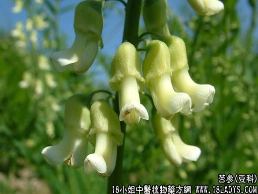

【中药概述】
苦参为豆科灌木植物苦参的根。苦、寒。归心、肝、大肠、小肠、胃经。
1．清热燥湿：用于湿热黄疸、泻痢、带下阴痒等，能清热燥湿，如<苦参丸>、<苦参地黄丸>、（医学心悟<治痢散>）、（沈氏尊生<香参丸>）；用于湿热黄疸，可与龙胆草，牛胆汁等同用。
2．祛风杀虫：用于治皮肤瘙痒、疥癣、脓疱等，有杀虫止痒之效。单用或配百部，花椒，蛇床子等外洗，或配枯矾，苍耳子，川楝子如（蛇床子散）、（局方苦参丸）、（证治准绳<苦参散>
）。
3．利尿：用于湿热蕴结、小便不利，灼热涩痛之证，可与石苇，蒲公英，木通等同用。
【药效鉴别】
苦参燥湿，寒胜热，能清肝、胃、大肠及膀胱经湿热，泻心经火热。偏用于皮肤湿疹、荨麻疹等。
【药理作用】
1．抗菌作用：苦参醚提物及醇提物对金黄色葡萄球菌有较强的抑菌作用；苦参水浸剂对堇色毛癣菌、同心性毛癣菌、许兰毛癣菌、奥杜盎小芽孢癣菌等有抑制作用。
2．抗肿瘤作用：苦参碱在体内外对小鼠艾氏腹水癌及肉瘤-180有抑制作用。
3．升白作用：苦参总碱及氧化苦参碱有明显的升白作用，对环磷酰胺、X射线与钴射线照射引起的白细胞减少有明显的治疗作用。
4．抗炎作用：苦参碱对小鼠巴豆油引起的耳廓肿胀、醋酸引起的小鼠腹腔渗出增加、大鼠角叉菜胶性足垫肿胀，均有抑制作用。
5．抗心律不齐作用：苦参碱能对抗氯仿-肾上腺素诱发的猫室性纤颤；也对抗乌头碱诱发的大鼠心律失常及哇巴因诱发的豚鼠室性纤颤。对氯仿吸入所致的小鼠心室纤颤、乌头碱诱发的大鼠
心律失常、氯仿-肾上腺素诱发的兔心律失常有明显对抗作用；苦参总黄酮并能对抗心肌细胞团自发及哇巴因诱发的搏动节律失常。
此外，苦参有明显的利尿作用；苦参生物碱尚有安定、平喘、免疫抑制作用。
【化学成分】
含苦参碱、氧化苦参碱为主。黄酮类成分有苦参素、次苦参素、异苦参素、去甲苦参素、苦参醇素等。
【用量用法】
6——30g，水煎服，或入剂。外用适量。
【使用注意】
易伤阴败胃，不宜久服。
【附】
1.《本草经集注》：“恶贝母、漏芦、菟丝子。”
2.《医学入门•本草》：“胃弱者慎用。”
3.《本草经疏》：“久服能损肾气，肝肾虚而无大热替勿服。”
4.《本草用法研究》：“凡恶寒腹泻，体温低，尿多而清白者，皆当禁服。孕妇亦忌。”